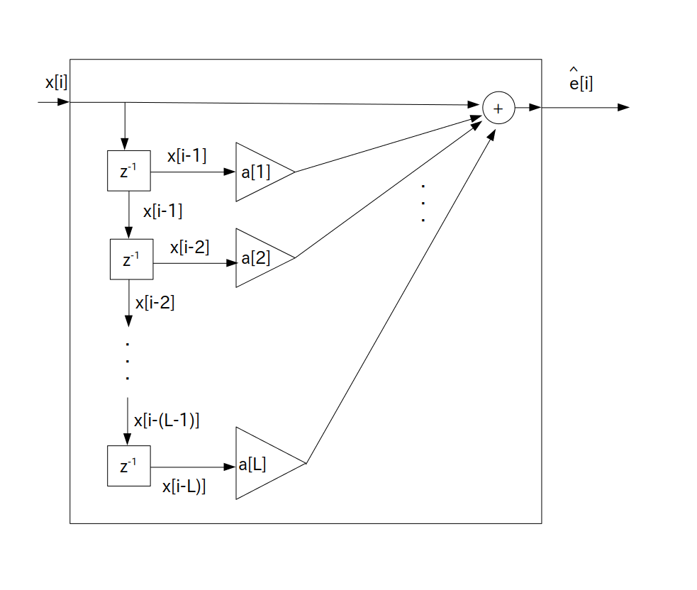

次に時刻 $i$ の時に信号を観測して実現値 $x[i]$ を手に入れたとします。
すると実現値 $x[i]$ とその線形予測値 $\hat{x}[i]$の差分から時刻 $i$ で付加されたホワイトノイズ $e[i]$ の値を予測できます。
その予測値のことを「線形予測誤差」や「線形予測残差」などといって、次の式で求められます。
次数 $\textrm{L}$ を正の整数とする
$x[i]$ は L 次自己回帰モデルに従って生成されている
$x[i]$ まで実現値を入手済みとする
$\hat{e}[i]$ ・・・ $e[i]$ の線形予測誤差
$\hat{x}[i]$ ・・・ $x[i]$ の線形予測値
$a[n]$ ・・・ LPC 係数
さて L 次線形予測誤差は次のブロック図で表されます。

要するに $x[i]$ を入力すると線形予測誤差 $\hat{e}[i]$ が出力されるFIR フィルタとなります。
よってプログラム表現は次の通りになります。
実現値 $x[i]$ は時刻 i が負の時は 0 とする
hat_e[i] = x[i] ; for( int n = 1; n <= L; ++n ) if( i-n >= 0 ) hat_e[i] += a[n] * x[i-n] ;